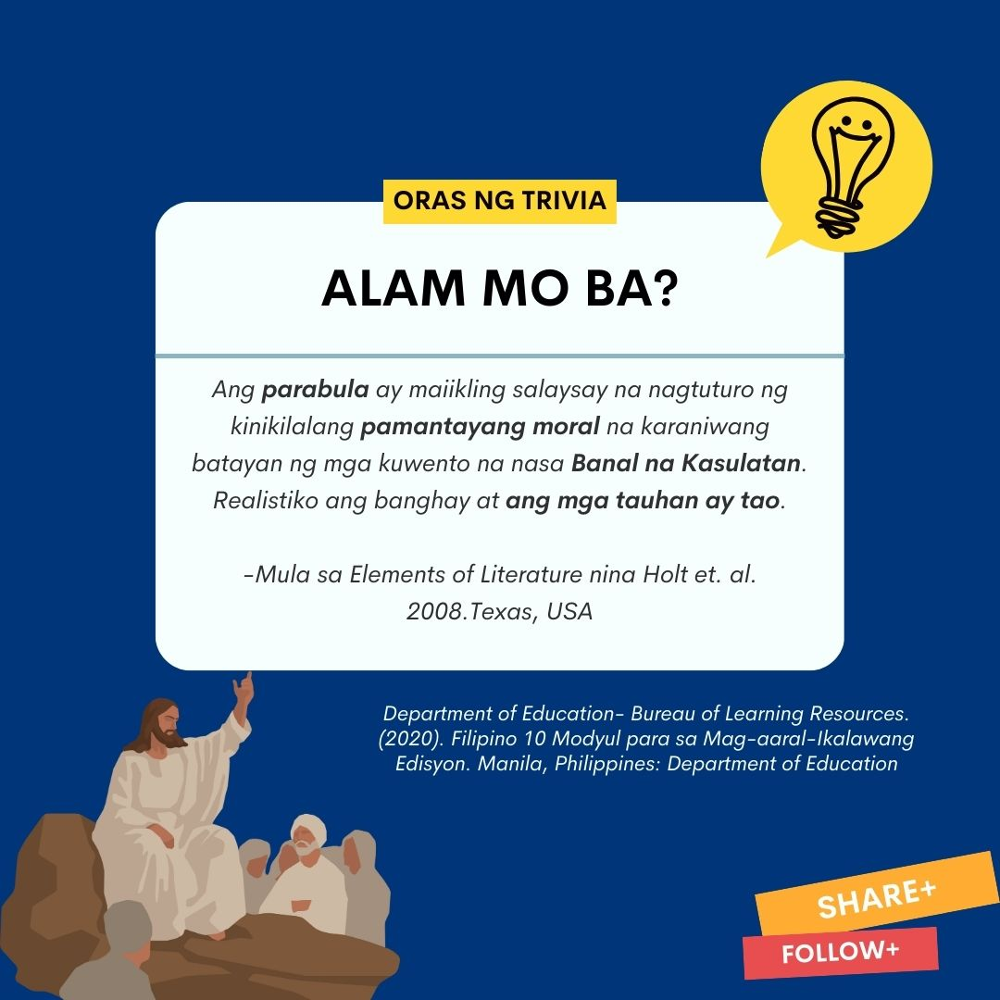
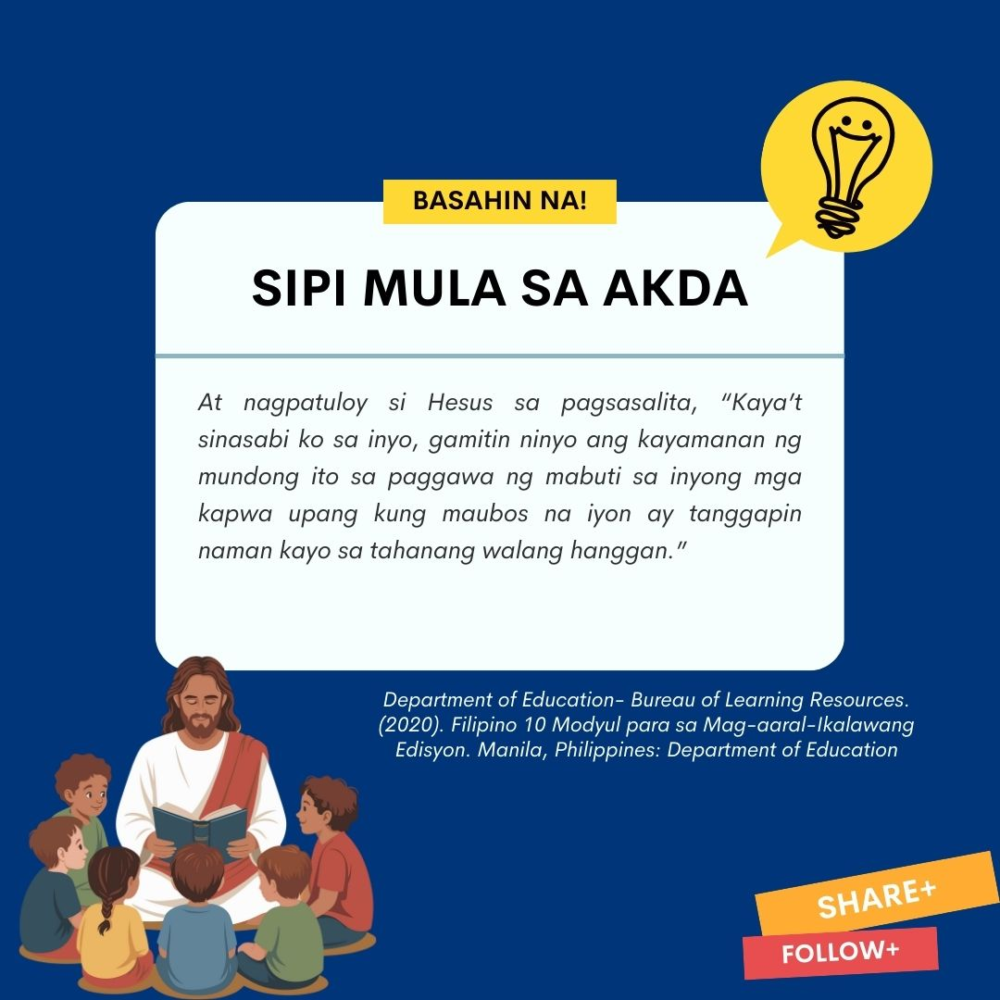

Sanggunian - 2020: "Department of Education- Bureau of Learning Resources. Filipino 10 Modyul para sa Mag-aaral-Ikalawang Edisyon. Manila, Philippines: Department of Education
(Lukas 16:1-15)
Philippine Bible Society
1) Nagsalita uli si Hesus sa kaniyang mga alagad, “May taong mayaman na may isang katiwala. May nagsumbong sa kaniyang nilulustay nito ang kaniyang ari-arian. 2) Kaya’t ipinatawag niya ang katiwala at tinanong, ‘Ano ba itong naririnig ko tungkol sa iyo? Ihanda mo ang ulat ng iyong pangangasiwa sapagkat tatanggalin na kita sa iyong tungkulin.’ 3) Sinabi ng katiwala sa kanyang sarili, ‘Ano ang gagawin ko? Aalisin na ako ng aking amo sa pangangasiwa. Hindi ko kayang magbungkal ng lupa; nahihiya naman akong magpalimos. 4) Alam ko na ang aking gagawin! Maalis man ako sa pangangasiwa ay may tatanggap naman sa akin sa kanilang tahanan.
Tinanong niya ang una, ‘Magkano ang utang mo sa aking amo?’ 6) Sumagot ito, ‘Isandaang tapayang langis po.’ ‘Heto ang kasulatan ng iyong pagkakautang. Dali! Maupo ka’t palitan mo gawin mong limampu,’ sabi ng katiwala. 7) At tinanong naman niya ang isa, ‘Ikaw, gaano ang utang mo?’ Sumagot ito, ‘Isandaang kabang trigo po.’ Heto ang kasulatan ng iyong pagkakautang,’ sabi niya. ‘Isulat mo, walumpu.’ 8) Pinuri ng amo ang tusong katiwala dahil sa katalinuhang ipinamalas nito. Sapagkat ang mga makasanlibutan ay mas mahusay gumawa ng paraan kaysa mga maka-Diyos sa paggamit ng mga bagay ng mundong ito.
9) At nagpatuloy si Hesus sa pagsasalita,”Kaya’t sinasabi ko sa inyo, gamitin ninyo ang kayamanan ng mundong ito sa paggawa ng mabuti sa inyong kapwa upang kung maubos na iyon ay tanggapin naman kayo sa tahanang walang hanggan. 10) Ang mapagkakatiwalaan sa maliit na bagay ay mapagkakatiwalaan din sa malaking bagay at ang mandaraya sa maliit na bagay ay mandaraya rin sa malaking bagay. 11) Kaya kung hindi kayo mapagkakatiwalaan sa mga kayamanan ng mundong ito, sino ang magtitiwala sa inyo ng tunay na kayamanan? 12) At kung hindi kayo mapagkakatiwalaan sa kayamanan ng iba, sino ang magbibigay sa inyo ng talagang para sa inyo?
13) “Walang aliping maaaring maglingkod nang sabay sa dalawang panginoon sapagkat kamumuhian niya ang isa at iibigin ang ikalawa, paglilingkuran nang tapat ang isa at hahamakin ang ikalawa. Hindi kayo maaaring maglingkod ng sabay sa Diyos at sa kayamanan.” 14) Nang marinig ito ng mga Pariseo, kinutya nila si Jesus sapagkat sakim sila sa salapi. 15) Kaya’t sinabi niya sa kanila, “Nagpapanggap kayong matuwid sa harap ng mga tao, ngunit alam ng Diyos ang nilalaman ng inyong mga puso. Sapagkat ang itinuturing na mahalaga ng mga tao ay kasuklam -suklam sa paningin ng Diyos.

